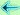

Artigos de opinião de Nuno Amendoeira
Nesta página disponibilizo os artigos de opinião que escrevi
para o
Canal NTV
entre Maio de 2020 e Abril de 2021.
Maio 2020
O exercício físico
em tempos de COVID-19
Junho 2020
8 mitos sobre
o exercício físico
Julho 2020
A diferença entre atividade
física e exercício físico
Agosto 2020
Treinar nas férias
Setembro 2020
O treino funcional
Outubro 2020
A importância do exercício
físico para as crianças
Novembro 2020
O exercício físico
no trabalho
Dezembro 2020
Desportos sem
esforço físico
Janeiro 2021
Exercício físico
outdoor no inverno
com temperaturas
muito baixas
Fevereiro 2021
O panorama desportivo
Março 2021
A minha experiência
nas aulas online
Abril 2021Motivação para treinar
 Menu
Opinião sobre este site